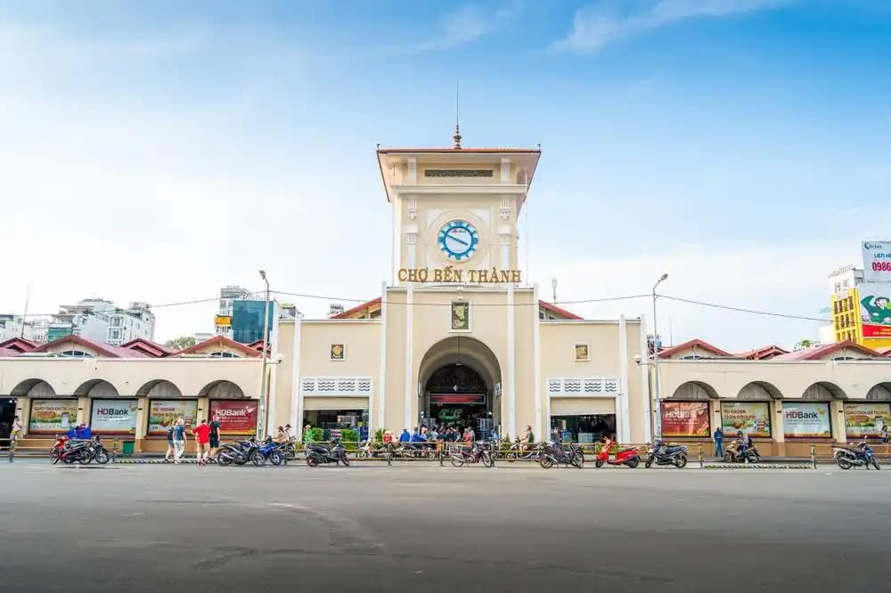

Chợ Bến Thành
Đường Lê Lợi, Phường Bến Thành, Quận 1
Thuyết Minh Audio
Nghe giới thiệu về lịch sử và kiến trúc chợ Bến Thành
Giới Thiệu Chi Tiết
Chợ Bến Thành không chỉ là một trung tâm giao thương sầm uất mà còn là biểu tượng văn hóa, kiến trúc lâu đời gắn liền với nhịp sống của người dân Thành phố Hồ Chí Minh qua hơn một thế kỷ.
1. Kiến trúc & Cấu trúc
Chợ Bến Thành được thiết kế theo lối kiến trúc lồng chợ kiên cố với tổng diện tích khoảng 13.056 m². Toàn bộ ngôi chợ được phân chia một cách khoa học nhờ hệ thống 4 cửa chính và 12 cửa phụ mở ra bốn hướng:
- Cửa Nam (cổng chính): Nhìn ra bùng binh Quách Thị Trang.
- Cửa Bắc: Hướng về đường Lê Thánh Tôn.
- Cửa Đông: Nằm trên đường Phan Bội Châu.
- Cửa Tây: Giáp đường Phan Chu Trinh.
Mặt bằng bên trong được quy hoạch thành các khu vực sạp hàng thông thoáng, giúp tối ưu hóa không gian di chuyển cho du khách và giao thương của tiểu thương.
2. Lịch sử hình thành & Người tạo ra
Ngôi chợ do hãng thầu Pháp Brossard et Maupin khởi công xây dựng từ năm 1912 và hoàn thành vào năm 1914. Trước đó, dự án xây dựng lại chợ tại vị trí đầm Boresse (nền đất hiện tại) được phê duyệt bởi Thị trưởng thành phố Sài Gòn lúc bấy giờ là ông François Nouet.
Việc chọn lựa nhà thầu Brossard et Maupin – một công ty xây dựng nổi tiếng thời Pháp thuộc – đã mang lại cho chợ Bến Thành một kết cấu bê tông cốt thép vững chắc cùng diện mạo kiến trúc kết hợp hài hòa giữa kỹ thuật phương Tây và đặc trưng bản địa.
3. Đặc trưng nổi bật
- Tháp đồng hồ biểu tượng: Điểm nhấn mang tính biểu tượng của chợ Bến Thành là tòa tháp đồng hồ ba mặt cao vút ngự trị ngay tại mặt tiền cửa Nam.
- Phù điêu gốm Biên Hòa: Ngay phía dưới tháp đồng hồ và các lối vào, bạn sẽ ấn tượng với những bức phù điêu bằng gốm Biên Hòa khắc họa hình ảnh các sản vật quen thuộc của miền Nam như con bò, con cá đuối, nải chuối...
- Ẩm thực & Chợ đêm: Khu ẩm thực phong phú trong lồng chợ với hàng trăm món ăn đặc sản Nam Bộ và khu phố chợ đêm sầm uất bao quanh chính là nét đặc trưng thu hút hàng triệu du khách trong và ngoài nước mỗi năm.